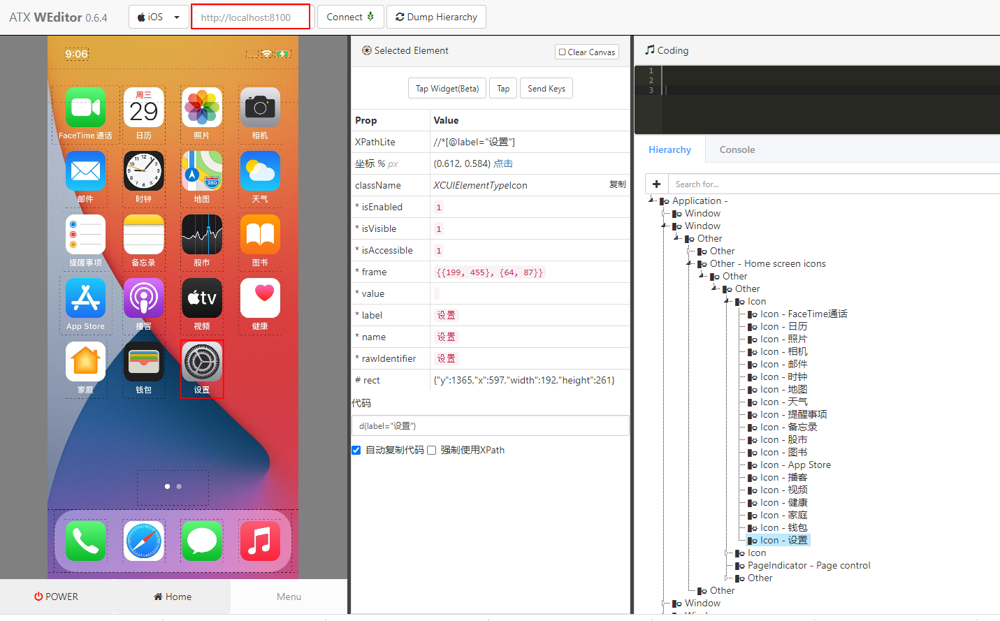

facebook-wda 是一个基于Python的测试库，通过HTTP协议与WebDriverAgent通信，本文介绍如何使用 facebook-wda 进行iOS APP自动化测试。
环境准备
使用 facebook-wda 之前需要满足如下条件：
手机安装 WebDriverAgent应用
- 可以使用xcodebuild启动WDA（需要MAC电脑）
- 也可以使用tidevice启动，它可以在Linux 、Windows和MAC上使用
电脑安装facebook-wda：
1 | pip3 install -U facebook-wda |
在windows上搭建iOS自动化测试环境可参考：Windows上实现iOS APP自动化测试：tidevice + WebDriverAgent + facebook-wda / appium
本文使用tidevice启动WDA：
1 | $ tidevice list |
可以使用weditor查看UI元素，注意使用它之前要启动WDA。
1 | pip3 install -U weditor # 安装 |
命令窗口输入weditor，会自动打开一个浏览器，选择iOS。

环境准备好后就可以使用facebook-wda进行iOS APP自动化测试了。
初始化
全局配置
1 | import wda |
DEBUG设置为 True 时会显示HTTP请求和响应信息1
2
3
4
5
6
7
8
9
10
11
12
13
14
15
16
17
18
19
20
21
22
23
24
25
26
27
28
29>>> import wda
>>> wda.DEBUG = True
>>> wda.HTTP_TIMEOUT = 180.0
>>> wda.DEVICE_WAIT_TIMEOUT = 180.0
>>> c = wda.Client('http://localhost:8100')
>>> c.app_current()
Shell$ curl -X GET -d '' 'http://localhost:8100/wda/activeAppInfo'
Return (206ms): {
"value" : {
"processArguments" : {
"env" : {
},
"args" : [
]
},
"name" : "",
"pid" : 228,
"bundleId" : "com.apple.Preferences"
},
"sessionId" : null
}
{'processArguments': {'env': {}, 'args': []}, 'name': '', 'pid': 228, 'bundleId': 'com.apple.Preferences'}
>>>
>>> wda.DEBUG = False
>>> c.app_current()
{'processArguments': {'env': {}, 'args': []}, 'name': '', 'pid': 228, 'bundleId': 'com.apple.Preferences'}
>>>
创建一个客户端
1 | import wda |
也可以使用USBClient连接设备：
1 | c = wda.USBClient() # 仅连接一个设备可以不传参数 |
注：初始化连接设备时不需要事先使用tidevice命令启动WDA，wda.Client()会自动启动WDA应用。
设备操作
等待WDA服务正常
1 | c.wait_ready(timeout=120, noprint=True) # 默认120s，安静的等待，无进度输出 |
锁屏
1 | >>> c.locked() |
回到手机主页面
1 | c.home() |
增大降低音量
1 | c.press("volumeUp") |
打开、停止App
打开APP1
2
3
4
5s = c.session('com.apple.Health') # 打开app
s = c.session('com.apple.Health', alert_action="accept")
s.close() # 关闭
c.session().app_activate("com.apple.Health") # 打开app
停止APP：
1 | c.session().app_terminate("com.apple.Health") # 关闭app |
获取app状态：
1 | c.session().app_state("com.apple.Health") # 返回app状态 |
1：表示已关闭2：表示后台运行4：表示正在运行
获取设备应用信息
查看设备状态信息
1 | >>> c.status() |
获取应用信息
当前应用信息1
2>>> c.app_current()
{'processArguments': {'env': {}, 'args': []}, 'name': '', 'pid': 228, 'bundleId': 'com.apple.Preferences'}
获取设备信息
设备信息
1 | c.device_info() |
电量信息
1 | c.battery_info() |
分辨率：
1 | c.window_size() |
UI元素定位
基本选择器
通过属性值定位：
id1
s(id='URL')
className1
s(className="XCUIElementTypeCell")
name1
2
3s(name='屏幕使用时间')
s(nameContains='屏幕')
s(nameMatches="屏幕.*")
value1
s(value="屏幕使用时间")
label1
2s(label="屏幕使用时间")
s(labelContains="屏幕")
也可以组合多个属性，可以组合的属性包括：className、name、label、visible、enabled。1
s(className="XCUIElementTypeCell",name="屏幕使用时间").click()
子元素
1 | # 子元素定位 |
多个实例
返回所有匹配到的元素
1 | $ s(nameContains='模式').find_elements() |
使用index来选择匹配到的多个元素1
2
3s(nameContains='模式', index=2).click() # 点击匹配到的第3个元素
# 或者
s(nameContains='模式')[2].click()
XPath定位
1 | s(xpath='//*[@name="屏幕使用时间"]') |
更多xpath语法可参考Web自动化测试：xpath & CSS Selector定位
Predicate定位
Predicate定位是iOS原生支持的定位方式，定位速度比较快，它可以通过使用多个匹配条件来准确定位某一个或某一组元素。
1 | s(predicate='name BEGINSWITH "屏幕"').click() # 点击屏幕使用时间 |
更详细的Predicate语法及定位示例可参考：iOS APP自动化：predicate定位方法介绍
classChain定位
classChain是Predicate和Xpath定位的结合，搜索效率比XPath更高。
1 | s(classChain='**/XCUIElementTypeTable/*[`name == "通知"`]').click() # 点击【通知】 |
更详细的使用方法参考：iOS APP自动化：class chain定位方法介绍
获取元素信息
检查元素是否存在
1 | s(name="屏幕使用时间").exists # Return True or False |
读取UI元素的属性信息
1 | ele = s(name="屏幕使用时间").get(timeout=3.0) # 如果10s内没有找到，会抛出WDAElementNotFoundError错误 |
元素操作方法
点击
点击UI元素1
2
3
4
5
6
7
8s(name="屏幕使用时间").get(timeout=3.0).tap()
s(name="屏幕使用时间").tap()
s(name="设置").tap_hold(2.0) # 长按
s(name="屏幕使用时间").click()
s(text='屏幕使用时间').click_exists() # return True or False
s(text='屏幕使用时间').click_exists(timeout=5.0)
点击像素坐标1
2
3
4
5
6
7
8s = c.session('com.apple.Preferences')
s.tap(490, 1885) # 通过像素坐标点击
s.click(490, 1885)
s.click(0.426, 0.716)
s.double_tap(490, 1885) # 双击
文本输入
文本值输入与清除
1 | ele = s(text='搜索').get() |
等待wait
设置隐式等待：
1 | s.implicitly_wait(5) # 5s |
设置超时时间
1 | s.set_timeout(10.0) |
等待元素1
2s(name="屏幕使用时间").wait(timeout=3.0) # 等待元素出现
s(name="屏幕使用时间").wait_gone(timeout=3.0) # 等待元素消失
Alert操作
对Alert弹框进行处理
1 | >>> print(s.alert.exists) |
1 | s.alert.accept() # 确认 |
也可以监控到Alert出现后进行操作：1
2with c.alert.watch_and_click(['好', '确定']):
s(label="Settings").click() #
滑动swipe
根据像素坐标滑动1
2
3
4
5c.swipe(fx, fy, tx, ty, duration=0.5) # 从(fx, fy)滑到(tx, ty)，坐标值可以是迅速值或者百分比，duration单位秒
c.swipe_left() # 向左滑动
c.swipe_right()
c.swipe_up()
c.swipe_down()
截图
1 | s.screenshot().save("test.png") |
设备截屏1
2c.screenshot().save("screen.png")
c.press_duration("snapshot", 0.1)
pytest + facebook-wda实例
测试步骤：
- 打开【设置】
- 点击搜索
- 输入“NFC”
- 关闭NFC
- 断言NFC是否关闭
Python代码：
1 | #!/usr/bin/python3 |
本文标题:使用facebook-wda进行iOS APP自动化测试
文章作者:hiyo
文章链接:https://hiyongz.github.io/posts/app-testing-tools-for-facebook-wda/
许可协议:本博客文章除特别声明外，均采用CC BY-NC-ND 4.0 许可协议。转载请保留原文链接及作者。